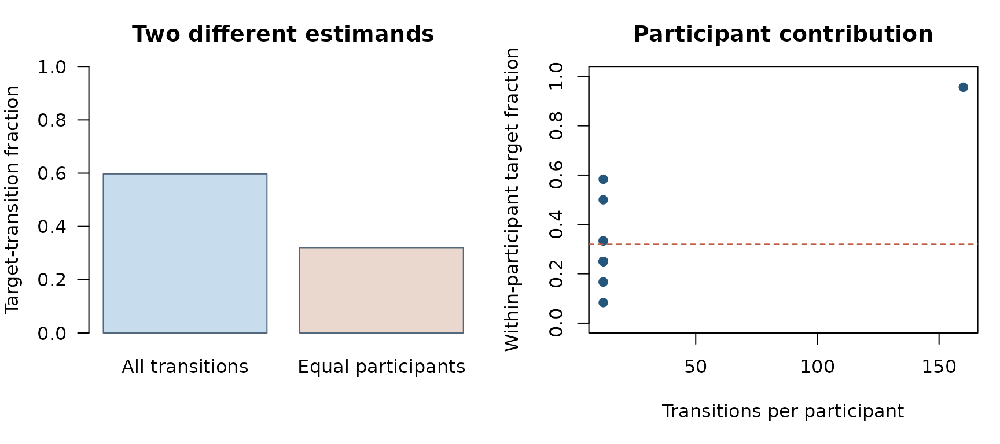
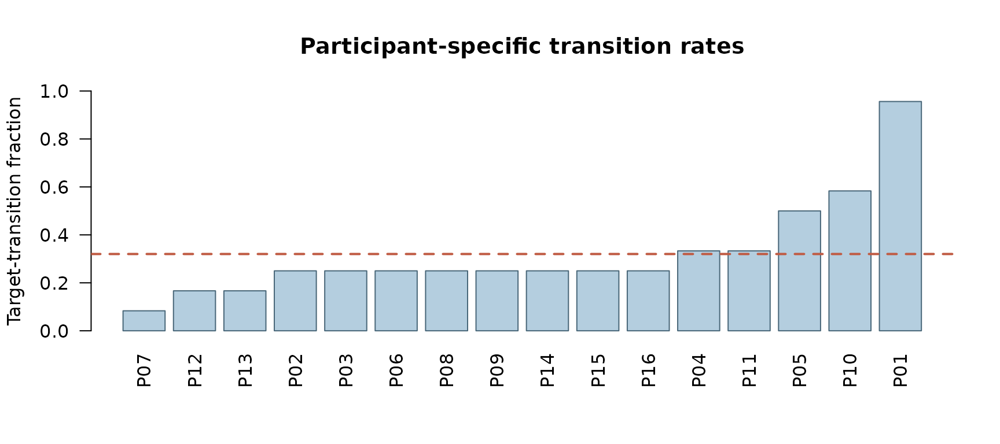

Who counts? Transition-weighted and participant-equal sequence summaries
Source:vignettes/transition-unit-audit-october-2026.Rmd
transition-unit-audit-october-2026.RmdTarget population before plotting
An overall fraction of transitions into a state has different meanings depending on the unit receiving equal weight. Pooling all transitions weights frequent contributors more heavily. Equal-participant averaging weights each participant’s observed within-person transition fraction equally. Neither weighting rule is universally correct: choose the estimand using the question, sampling and observation process.
This deliberately synthetic demonstration features 16 participants and 340 transitions. One participant contributes 160 transitions with high target-state probability; the other 15 contribute only 12 transitions each and have lower target-state probability. The unequal contribution is designed to reveal estimand sensitivity, not to mimic empirical eye-tracking evidence.
source(system.file("research", "october_2026_transition_unit_audit.R",
package = "gp3sequences"), local = TRUE)
example_data <- gp3sequences_october_transition_data()
audit <- gp3sequences_october_transition_audit(example_data)
stopifnot(nrow(audit$participant) == 16L,
nrow(example_data) == 340L)
audit$summary## estimand estimate independent_participants observed_transitions
## 1 transition-weighted 0.5970588 16 340
## 2 participant-equal 0.3201823 16 340Figure 1. Estimand and contribution audit
gp3sequences_october_transition_plot(audit)
Original R-generated synthetic figures. The left panel compares transition-weighted and participant-equal estimands; the right panel shows why unequal observation counts can change their interpretation.
Figure 2. Each independent participant is visible
person <- audit$participant
person <- person[order(person$participant_rate), , drop = FALSE]
graphics::barplot(person$participant_rate,
names.arg = person$participant_id, las = 2,
ylim = c(0, 1), col = "#B4CEDF",
border = "#496779",
ylab = "Target-transition fraction",
main = "Participant-specific transition rates")
graphics::abline(h = audit$summary$estimate[2L], lty = 2,
col = "#C05B43", lwd = 2)
Descriptive participant-level rates from the single synthetic generating dataset; bars are not confidence intervals or posterior estimates.
Inferential and generalization boundaries
The bars summarize one known synthetic dataset. Within-participant transitions are dependent; a binomial interval treating all transition rows as independent would not be a defensible participant-level uncertainty interval. Equal-weight averaging is not a correction for informative observation, selection, state-dependent censoring, stationarity violations, or missing time segments. Transition-network and group-comparison claims require a design-aware estimand and appropriate independent-unit resampling or hierarchical modelling.
This script is source-only and its functions are not added to the stable exported API. It does not change hidden-Markov fitting, sequence inference or the archived CRAN/GitHub release. Full package checking and independent empirical validation remain separate release decisions.